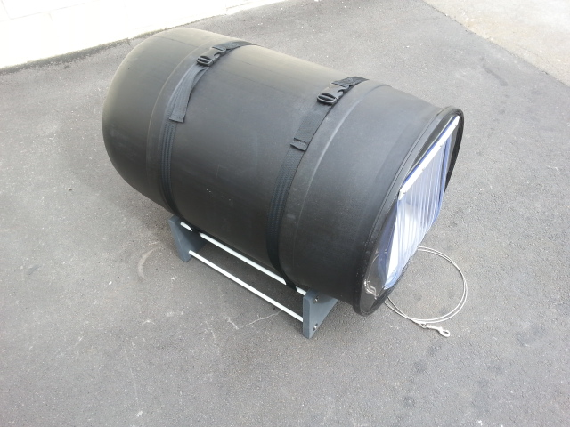

RESEARCH
 Tony knew that a warmer kennel wasn’t just about comfort, warm dogs eat less and they work longer. As well as being warm the kennel needed to be light so it could be transported easily and it couldn’t be too expensive. After dogs ate his first plywood prototype Tony hit on the idea of using recycled plastic 44 gallon drums. By fitting one inside the other there could be a layer of insulation between. Dog kennels generally have open doors “often facing the wind”. What was needed was a durable “curtain” dogs could pass through.